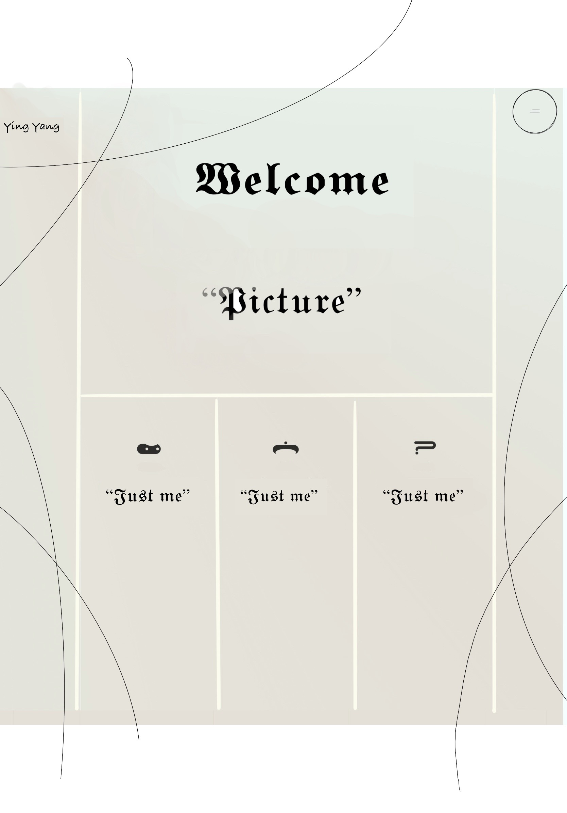
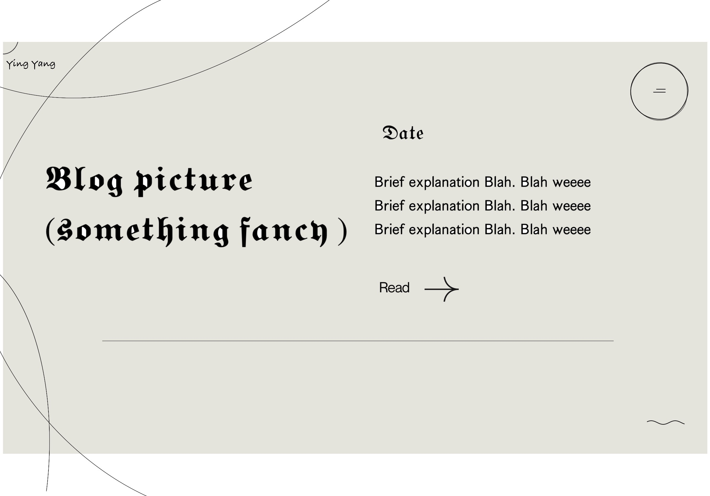
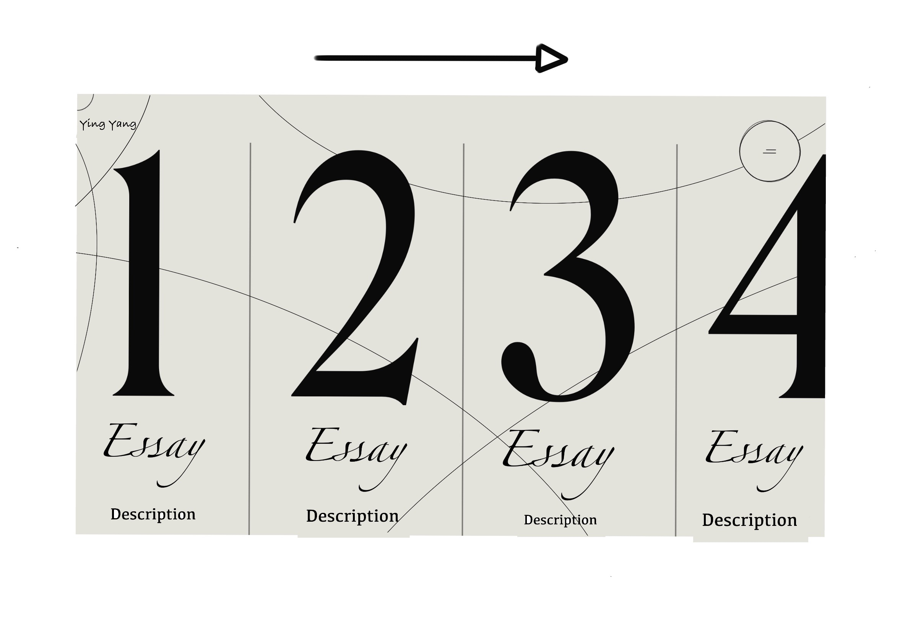
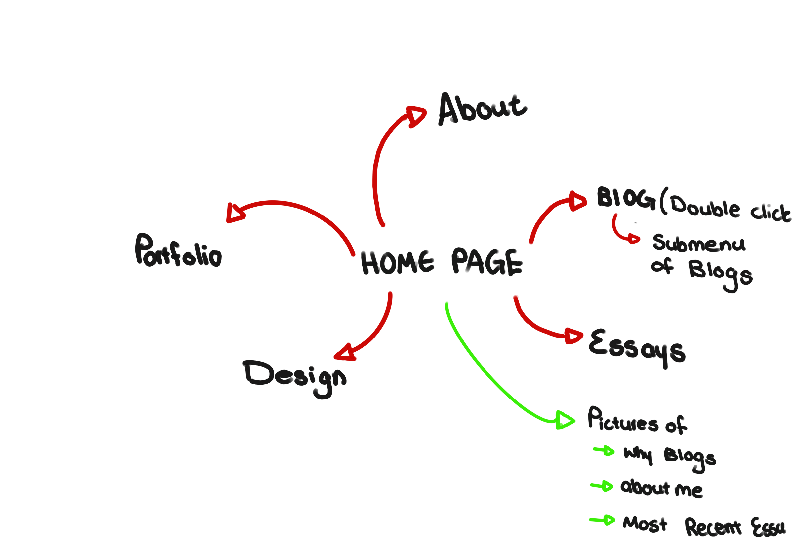
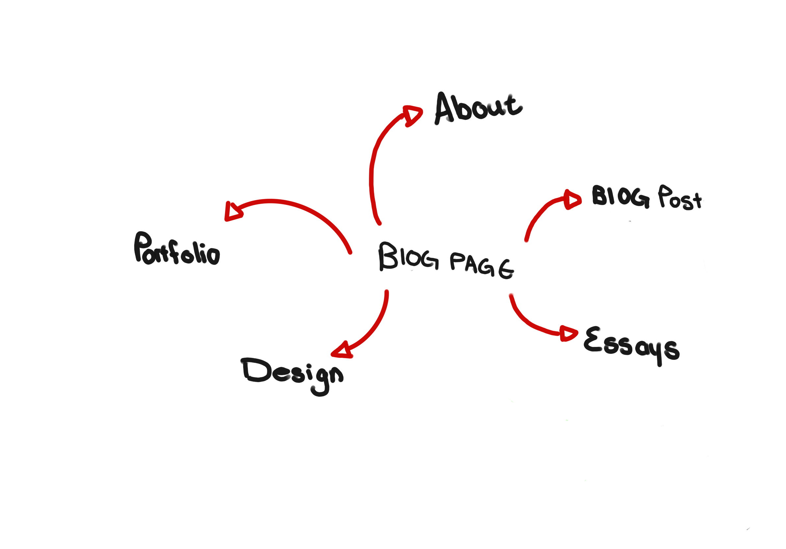
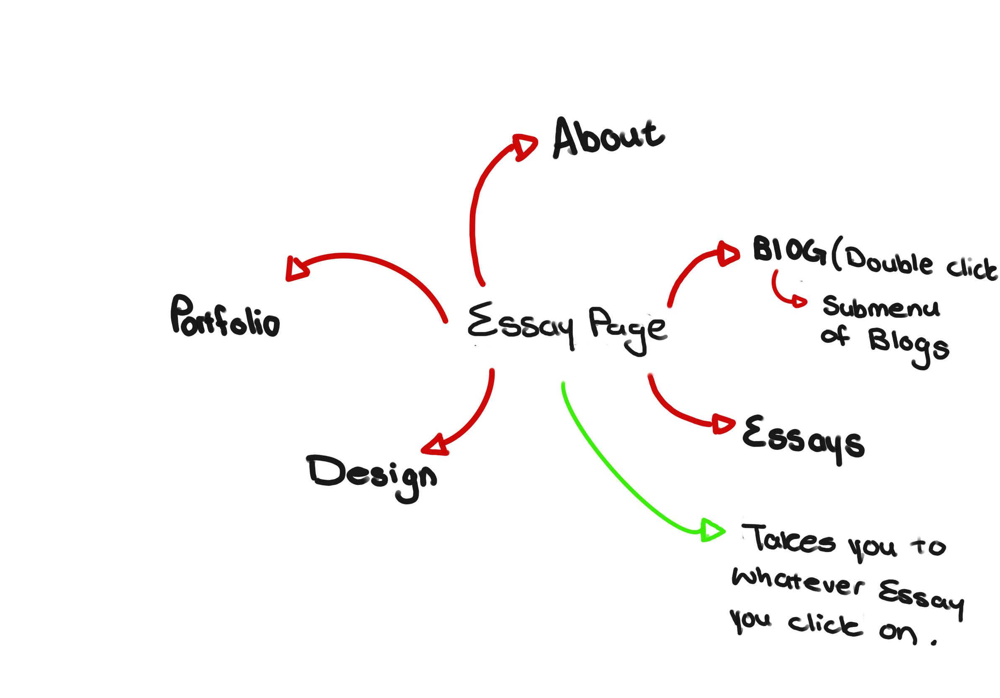

Initial Wireframe Concepts
Wireframe #1: Home Page
For the home page, I envision a clean layout with a prominent header showcasing the website name and a concise navigation menu. Below, a hero section might feature a brief introduction or a captivating image to engage visitors right away.
Wireframe #2: Blog Section
In the blog section, simplicity is key. I'm considering a grid-style layout to display blog post previews, with each post represented by a thumbnail image and a brief excerpt. A "Read More" button would lead to the full article, encouraging further exploration.
Wireframe #3: Essays Section
Like the blog section, the essays area will maintain a consistent design language. Here, I'm thinking of a grid-style layout with numbered tiles representing each essay, providing a visually appealing overview. Each tile will feature a title and a brief description, allowing visitors to quickly grasp the essence of each essay.
To accommodate a large number of essays, I'm considering implementing horizontal scrolling functionality. This intuitive feature will allow visitors to navigate through the essays by swiping or clicking left and right, ensuring a seamless browsing experience.
Including numbered tiles not only adds a touch of uniqueness but also aids navigation, making it easier for visitors to find specific essays of interest. By combining aesthetics with functionality, this wireframe aims to enhance user engagement and encourage exploration of the essay collection.
User Interface
Imagine my website as a well-organized library, with each section representing a different genre of books waiting to be explored. At the heart of this digital library lies the Home Page, akin to the foyer, where visitors are greeted with curated highlights from various sections.
Moving on, we have the Portfolio section, which serves as the main exhibit hall. Here, visitors can peruse through a curated collection of my most notable works and projects, gaining insight into my skills and expertise.
Next in line is the About page, functioning as a virtual biography. It offers visitors a glimpse into the person behind the screen, providing background information and insights into my professional journey and aspirations.
Then there's the Designs section, akin to a workshop, where visitors can witness the creative process unfold. This area showcases the latest design endeavors, offering a behind-the-scenes look at the ideation and execution of various projects.
Lastly, we have the Blogs section, akin to a literary salon, where visitors can engage with thought-provoking articles and insights. Here, I share weekly reflections and commentary on a variety of topics, inviting visitors to join the conversation.
What ties it all together are the intuitive navigation elements, represented by arrows in the interface. These elements allow visitors to seamlessly navigate between sections without losing their place, ensuring a smooth and enjoyable browsing experience.
Home Page Design
As depicted above, my vision for the homepage is one of elegant minimalism, characterized by a subdued palette of greys infused with a refreshing blue-green tint. I aim to streamline navigation through a discrete button, concealing the complexities to offer a seamless user experience. Beneath this understated interface, I envisage a captivating 3D animation, setting the stage for an immersive journey into my digital space.
Furthermore, I intend to showcase my latest creations—be it blogs, essays, or insights—arranged in a visually engaging format. Each element serves as a portal, inviting visitors to delve deeper into my thoughts and experiences. By simply clicking on these curated images, users will seamlessly transition to the respective content, fostering a dynamic interaction that resonates with the essence of my digital presence.
In the depiction above, I've outlined an iteration of my homepage design. It encompasses various sections such as blogs, essays, home, about, and portfolio, each offering a distinct aspect of my digital presence. Notably, under the 'blog' section, there's a submenu providing easy access to categorized entries, organized by weeks
A key feature of the design is the integration of images as clickable elements. These serve as intuitive pathways leading to different sections of the website, including blogs, essays, and about me. This intuitive interface aims to engage visitors seamlessly, encouraging exploration and interaction with the diverse content available
Portfolio Page Design
In my vision my portfolio page, I've crafted a captivating visual journey centered around a dynamic central line. As you navigate the page, this line becomes the conduit through which my creative inspirations unfold. On either side of the line, snippets revealing what and who has inspired my work emerge, creating an immersive narrative that evolves with each scroll.
Picture this: as you glide down the page, encountering anecdotes about my influences, the anticipation builds. And when you reach the culmination of this narrative thread, a mesmerizing animation springs to life. Suddenly, my artwork materializes, each piece bursting onto the screen with its own unique flair.
This thoughtful integration of storytelling and visual artistry ensures that every aspect of my portfolio page invites exploration and captivates the viewer's imagination.
Blog Page
Within the layout of my blog page, each entry is thoughtfully presented with a corresponding image denoting its week of publication. Adjacent to these visuals lies a concise description, offering a glimpse into the content awaiting exploration. Positioned conveniently below the description is a 'Read More' button, serving as a gateway to delve deeper into the entirety of the blog post
This structured approach ensures clarity and accessibility, facilitating seamless navigation through the array of entries. As visitors scroll down, they encounter a chronological cascade of blog entries, each encapsulating a unique perspective or topic. This intuitive design fosters engagement and encourages readers to immerse themselves in the diverse array of content awaiting discovery.
In this iteration, the blog page not only serves as a gateway to other sections but also seamlessly connects users to all available blogs
Essay Page Design
In envisioning the essay page, I imagine a sleek horizontal grid layout, where each grid corresponds to a numbered essay, neatly arranged from left to right. Within each grid, users will find a distinct number alongside a concise description of the essay, accompanied by a convenient 'Read More' link, likely directing to a PDF version for deeper exploration. This intuitive design encourages users to effortlessly navigate through the essays by scrolling horizontally, ensuring a seamless and engaging browsing experience.
In this iteration, the essay page not only provides links to other sections but also offers direct access to all available essay PDFs, enhancing the user's navigation experience.
Profile Page Design
On my profile page, a central line serves as a dynamic focal point. As you scroll, snippets about me emerge first on the right, then on the left, creating an engaging narrative. Additionally, in a captivating grid layout, three key aspects of my abilities gradually fade or elegantly fly into view, adding depth and interactivity to the user experience.